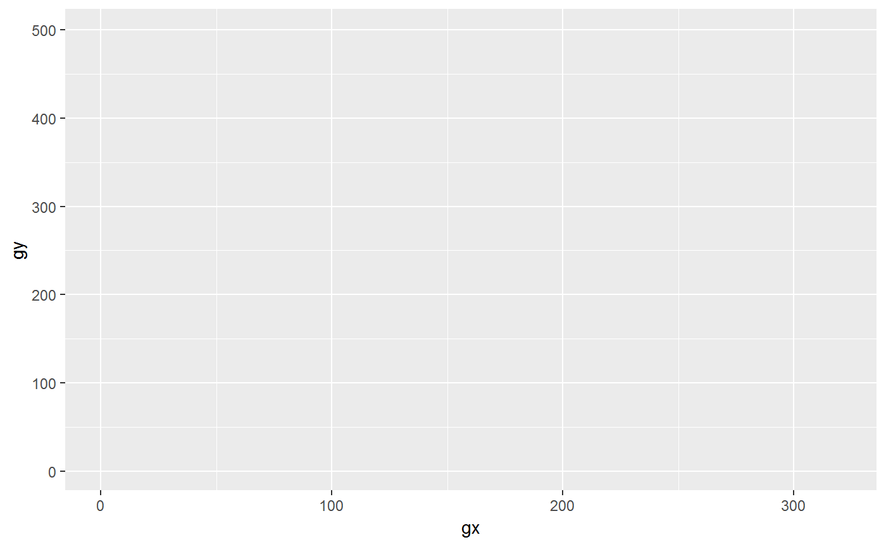
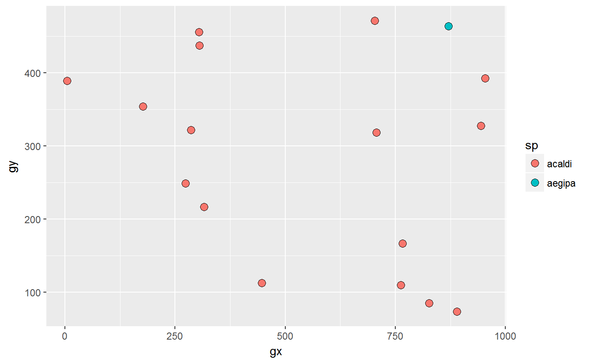
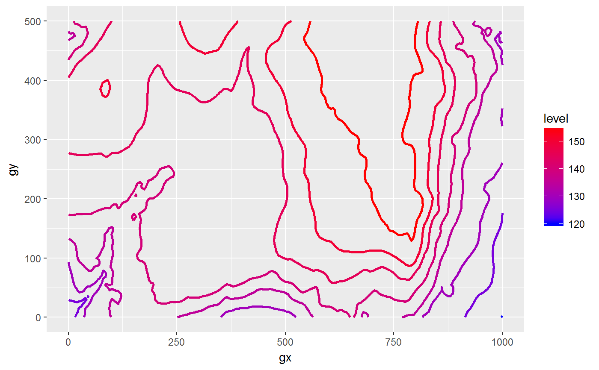
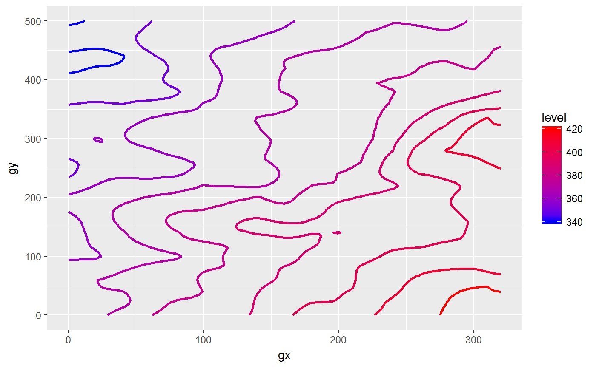

R/plot_each_species.R
map_gx_gy_elev.RdMap a base over which other map components can later be added.
map_gx_gy_elev(data) map_gx_gy(data)
| data | A dataframe; passed to |
|---|
plot_species_or_elevation(), plot_elevation(),
plot_each_species(), ggplot2::ggplot().
Other functions to create or modify plot layers: add_sp,
contour_elev, hide,
label_elev, limit_gx_gy,
wrap
# Small dataset with a few species for quick examples some_sp <- c("PREMON", "CASARB") census <- subset(fgeo.data::luquillo_tree5_random, sp %in% some_sp) elevation <- fgeo.data::luquillo_elevation # These functions look alike but internally they are not. base_census <- map_gx_gy(census) base_censusbase_elevation <- map_gx_gy_elev(elevation) base_elevation# This fails because the base plot has no information about elevation# NOT RUN { contour_elev(base_census) # }# This fails because the base plot has no information about species# NOT RUN { add_sp(base_elevation) # }